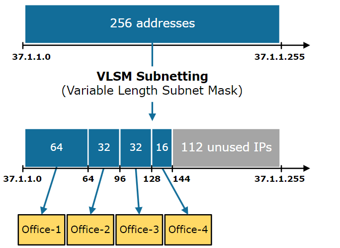

VLSM (Variable Length Subnet Mask)¶

Repaso sobre subnetting (FLSM)¶
Antes de entrar en VLSM, recordemos lo esencial de subnetting (Fixed Length subnet mask).
Subnetting permite dividir una red grande en subredes más pequeñas tomando bits del campo de hosts para crear máscaras de subred variables.
Recuerda que la primera y última IP no se pueden asignar a hosts, sino que su uso estaba reservado para direccionar la red y para broadcast.
Ejemplo de repaso resuelto (FLSM)¶
Partimos de una red base: Por ejemplo: 192.168.1.0/24
Objetivo: la queremos subdividir en un número de subredes iguales. Por ejemplo 4.
1) Necesitas 4 subredes → 2 bits prestados (2^2 = 4).
2) Obtenemos la nueva máscara: `/24 + 2 = /26 (255.255.255.192).
3) Calculamos el tamaño del bloque: 2⁽³²⁻²⁶⁾ = 2⁶ = 64 IPs por subred (62 hosts utilizables).
4) Enumeramos las subredes resultantes
Subredes resultantes (saltos de 64):
| Subred | D subred | D hosts | D broadcast |
|---|---|---|---|
192.168.1.0/26 |
192.168.1.0 |
192.168.1.1 - 192.168.1.62 |
192.168.1.63 |
192.168.1.64/26 |
192.168.1.64 |
192.168.1.65 - 192.168.1.126 |
192.168.1.127 |
192.168.1.128/26 |
192.168.1.128 |
192.168.1.129 - 192.168.1.190 |
192.168.1.191 |
192.168.1.192/26 |
192.168.1.192 |
192.168.1.193 - 192.168.1.254 |
192.168.1.255 |
Qué es VLSM¶
VLSM (Variable Length Subnet Mask) es una extensión de la técnica de subnetting que permite dividir una red IP en subredes de tamaños variables, usando máscaras de subred de longitudes diferentes.
A diferencia del subnetting fijo (FLSM, Fixed Length Subnet Mask), donde todas las subredes tienen el mismo tamaño, VLSM ajusta el tamaño de cada subred según las necesidades reales de hosts, optimizando el uso de direcciones IP.
Esto es especialmente útil en redes locales (LAN) para evitar desperdiciar IPs en segmentos pequeños, como enlaces punto a punto.
Metafora: Imagina una red como un pastel: con FLSM, cortas todas las porciones iguales, aunque algunos solo necesiten un trocito. Con VLSM, cortas porciones a medida, ahorrando más pastel para otros.
Por qué usarlo¶
- Eficiencia en el espacio de direcciones: Maximiza el uso de IPs disponibles, especialmente en redes IPv4 donde las direcciones son limitadas.
- Reducción de desperdicio: En subredes pequeñas (ej. un enlace entre routers con solo 2 hosts), no malgastas 254 IPs como en una `/24.
- Flexibilidad: Permite crecer la red sin reasignar todo el esquema de IPs.
Aspectos a tener en cuenra al diseñar subredes con VLSM¶
Si partimos de una red que queremos subdividir usando VLSM.
- Asignación por tamaño: Siempre empieza asignando las subredes más grandes primero para evitar fragmentación y solapamientos.
- Límites de bloques: Cada subred debe alinearse en límites binarios (potencias de 2), es decir, su dirección inicial debe ser múltiplo del tamaño del bloque.
- Cálculo de tamaños: El tamaño de la subred (incluyendo red y broadcast) es una potencia de 2 (ej. 4, 8, 16...). Para n bits de hosts: hosts utilizables = 2^n - 2.
- Máscaras CIDR: La máscara
/xindica bits de red; bits de hosts =32 - x(para IPv4). - No superposición: Las subredes deben ser contiguas pero no solaparse; encajan como piezas de un puzzle dentro de la red base.
Pasos para hacer VLSM¶
- Lista y ordena las necesidades: Enumera los requisitos de hosts por subred (ej. departamento A: 100 hosts, enlace B: 2 hosts). Ordénalos de mayor a menor para asignar primero los bloques grandes.
- Calcula el tamaño mínimo de cada subred: Para cada una, encuentra la potencia de 2 más pequeña que cubra hosts + 2 (red y broadcast). Ej:
100 hosts → 128 (2⁷), ya que2⁷ - 2 = 126 ≥ 100. - Determina la máscara CIDR de cada subred: Máscara =
/(32 - bits de hosts). Ej: tamaño128 → bits hosts=7 →/25`. - Asigna bloques en la red base: Empieza desde la dirección inicial de la red (ej.
192.168.10.0). Asigna el bloque más grande, luego el siguiente disponible (fin del anterior +1, alineado al límite). - Verifica y documenta: Comprueba que no haya solapamientos, que quepan en la red base, y que sobre espacio para futuro. Usa una tabla para registrar subred, máscara, rango, hosts utilizables.
Tabla de tamaños habituales¶
Usa esta tabla para reference rápida. Recuerda: IPs totales = 2^(32 - CIDR), hosts utilizables = IPs totales - 2.
| CIDR | IPs totales | Hosts utilizables | Uso típico |
|---|---|---|---|
| /30 | 4 | 2 | Enlaces punto a punto (ej. routers) |
| /29 | 8 | 6 | Pequeños grupos (ej. servidores) |
| /28 | 16 | 14 | Oficinas pequeñas |
| /27 | 32 | 30 | Departamentos medianos |
| /26 | 64 | 62 | Áreas con más dispositivos |
| /25 | 128 | 126 | Grandes segmentos |
| /24 | 256 | 254 | Redes enteras o VLANs |
Ejemplo detallado¶
Red base: 192.168.10.0/24 (256 IPs totales).
Necesidades (ordenadas de mayor a menor):
- Subred A: 100 hosts
- Subred B: 50 hosts
- Subred C: 20 hosts
- Subred D: 2 hosts
Cálculos y asignaciones: Para resolverlo paso a paso lo hacemos de la siguiente forma. Empezamos obteniendo la máscara de subred y la dirección de la red:
Cómo usaremos 102 IPs (100 para equipos + dirección de red + dirección de broadcast) necesitamos 7 bits (2⁷ = 128) para direccionarlas.
La máscara de la subred será de 32 - 7 = 25 bits →
/25.La dirección de la red será la primera disponible en la red base cambiando la máscara para poder subdividirla (192.168.10.0/25)
| Subred | IPs Necesarias | P. CIDR | D subred | Rango IPs usables | D broadcast |
|---|---|---|---|---|---|
| A | ≥102 IPs → 128 (2^7) | /25 |
192.168.10.0 |
||
| B | |||||
| C | |||||
| D |
A continuación calculamos la dirección de la red siguiente sumando a la actual tantos unos en binario como bits se usan para la parte de host de la red actual.
Como la red actual es
/25→ 7bits hosts , la subred siguiente empezara sumando a la red actual (192.168.10.0) en binario 7 unos en binario111 1111(128). Obtenemos192.168.10.128
| Subred | IPs Necesarias | P. CIDR | D subred | Rango IPs usables | D broadcast |
|---|---|---|---|---|---|
| A | ≥102 IPs → 128 (2⁷) | /25 |
192.168.10.0 |
||
| B | 192.168.10.128 |
||||
| C | |||||
| D |
La dirección de broadcast será la IP anterior a la de la red siguiente y el rango de IPs usables las que están entre la de red y la de broadcast:
En este como la dirección de la red siguiente es 192.168.10.128, la dirección de broadcast será la anterior 192.168.10.127 y el rango de IPs usables sera de la .1 a la .126
| Subred | IPs Necesarias | P. CIDR | D subred | Rango IPs usables | D broadcast |
|---|---|---|---|---|---|
| A | ≥102 IPs → 128 (2⁷) | /25 |
192.168.10.0 |
192.168.10.1 - 192.168.10.126 |
192.168.10.127 |
| B | 192.168.10.128 |
||||
| C | |||||
| D |
La siguiente red se calcula de forma análoga:
Necesitamos 50 + 2IPs. ≥52 IPs → 64 (2^6). Máscara de 32 - 6 = /26
| Subred | IPs Necesarias | P. CIDR | D subred | Rango IPs usables | D broadcast |
|---|---|---|---|---|---|
| A | ≥102 IPs → 128 (2^7) | /25 |
192.168.10.0 |
192.168.10.1 - 192.168.10.126 |
192.168.10.127 |
| B | ≥52 IPs → 64 (2^6) | /26 |
192.168.10.128 |
||
| C | |||||
| D |
Como la red actual es /26 → 6bits hosts , la subred siguiente empezara sumando a la red actual (192.168.10.128) en binario 6 unos en binario 11 1111 (64). Obtenemos 192.168.10.192
| Subred | IPs Necesarias | P. CIDR | D subred | Rango IPs usables | D broadcast |
|---|---|---|---|---|---|
| A | ≥102 IPs → 128 (2^7) | /25 |
192.168.10.0 |
192.168.10.1 - 192.168.10.126 |
192.168.10.127 |
| B | ≥52 IPs → 64 (2^6) | /26 |
192.168.10.128 |
||
| C | 192.168.10.192 |
||||
| D |
En este como la dirección de la red siguiente es 192.168.10.192, la dirección de broadcast será la anterior 192.168.10.191 y el rango de IPs usables sera de la .129 a la .190
| Subred | IPs Necesarias | P. CIDR | D subred | Rango IPs usables | D broadcast |
|---|---|---|---|---|---|
| A | ≥102 IPs → 128 (2^7) | /25 |
192.168.10.0 |
192.168.10.1 - 192.168.10.126 |
192.168.10.127 |
| B | ≥52 IPs → 64 (2^6) | /26 |
192.168.10.128 |
192.168.10.129 - 192.168.10.190 |
192.168.10.191 |
| C | 192.168.10.192 |
||||
| D |
Siguiendo los mismos pasos obtenemos las subredes C y D
| Subred | IPs Necesarias | P. CIDR | D subred | Rango IPs usables | D broadcast |
|---|---|---|---|---|---|
| A | ≥102 IPs → 128 (2^7) | /25 |
192.168.10.0/25 |
192.168.10.1 - 192.168.10.126 |
192.168.10.127 |
| B | ≥52 IPs → 64 (2^6) | /26 |
192.168.10.128/26 |
192.168.10.129 - 192.168.10.190 |
192.168.10.191 |
| C | ≥22 IPs → 32 (2^5) | /27 |
192.168.10.192/27 |
192.168.10.193 - 192.168.10.222 |
192.168.10.223 |
| D | ≥4 IPs → 4 (2^2) | /30 |
192.168.10.224/30 |
192.168.10.225 - 192.168.10.226 |
192.168.10.227 |
IPs sobrantes: De .228 a .255 (26 IPs ≥ 2⁴) podría usarse para una red /28 o más pequeñas).
Ejemplo de asignación de hosts (hipotético):
- Subred A: Asigna .1 a .100 a dispositivos (sobrando de la .101 a la .126 para crecimiento).
- Subred B: .129 a .178. (sobrando de la .179 a la .190 para crecimiento).
- Subred C: .193 a .212. (sobrando de la .213 a la .222 para crecimiento).
- Subred D: .225 y .226 (ej. para routers).
Red base: 192.168.10.0/24 (0-255)
|----------------128 IPs (/25)----------------|-----64 (/26)-----|---32 (/27)---|--4 (/30)--| Sobrante |
|0.........................................127|128............191|192........223|224.....227|228-255
Errores típicos y cómo evitarlos¶
- No ordenar por tamaño: Causa que bloques pequeños queden "atrapados" entre grandes, provocando solapamientos o desperdicio. Solución: Siempre ordena descendente.
- Máscaras no potencias de 2: Intentar tamaños como 10 IPs (no es 2^n). Solución: Redondea al superior (16).
- Olvidar red/broadcast: Asignar direcciones de red o de broadcast a hosts. Solución: Recuerda: hosts = 2^n - 2.
- No alinear bloques: Empezar una subred en dirección no múltiplo (ej. .130 para `/26). Solución: Calcula múltiplos (ej. para 64: 0,64,128,192).
- Sobrepasar la base: Asignar más de lo disponible. Solución: Suma tamaños antes.